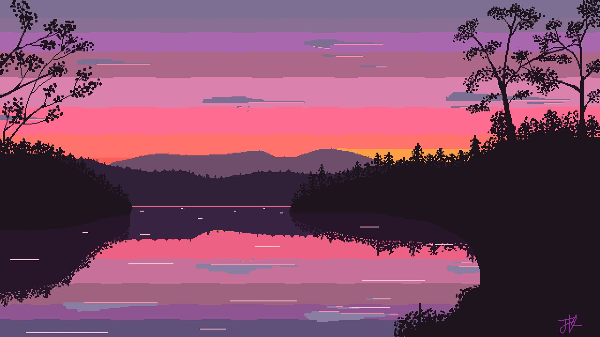
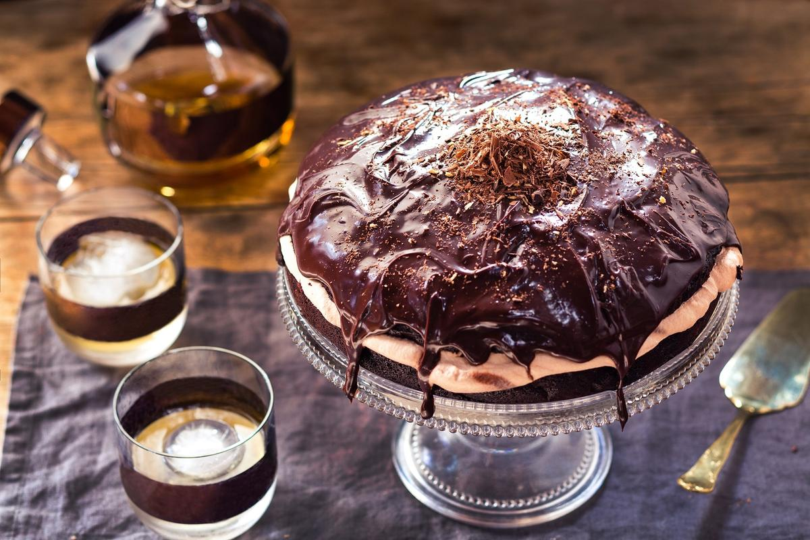

Discover: Source of Happiness
Let's have a visit in my Happy World
!!!
| My favorite | Description |
|---|---|
| "Let immerse yourself in your litter garden to enjoy your tranquility, leaving depression and stress behind. If you don't have a garden, I recommend Stardew Valley to you as a wonderful game to play." | |
| "Only watching them can melt your heart. Also, seeing how people treat them so gently ( A Chick Called Albert, or The Dodo) will definitely touch your heart." | |
| "Psychology, Adventure, Supernature, Mystery, Romance... Let enjoy some novels and comics in these genres to feel your cherish! Oh yes, with a cup of coffee!!" | |
|  | "Even looking at some arts can trigger your gratification. It is even more if those are your taste. Well, I recommend the artworks of WLOP, Funamusea, ENA, Seisaiminty, Sakimori_st30!!" |
 |
"Let have a coffee when listening to my playlist, then some special synchronizing feelings will cheer you." |
|  | "Well~ Are you feel hungry? Let's feed your eyes there." |